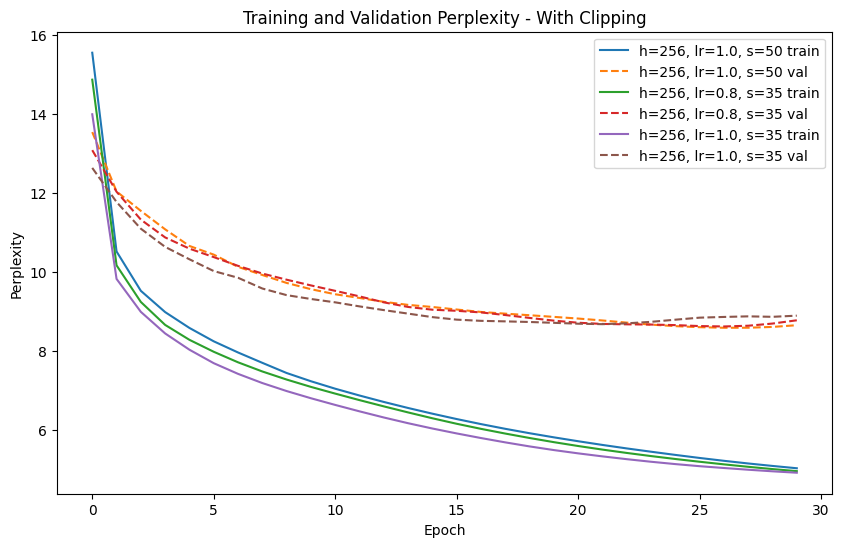
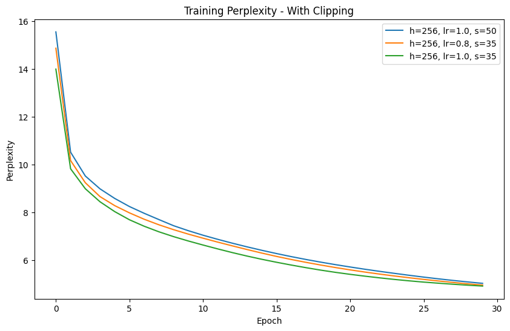
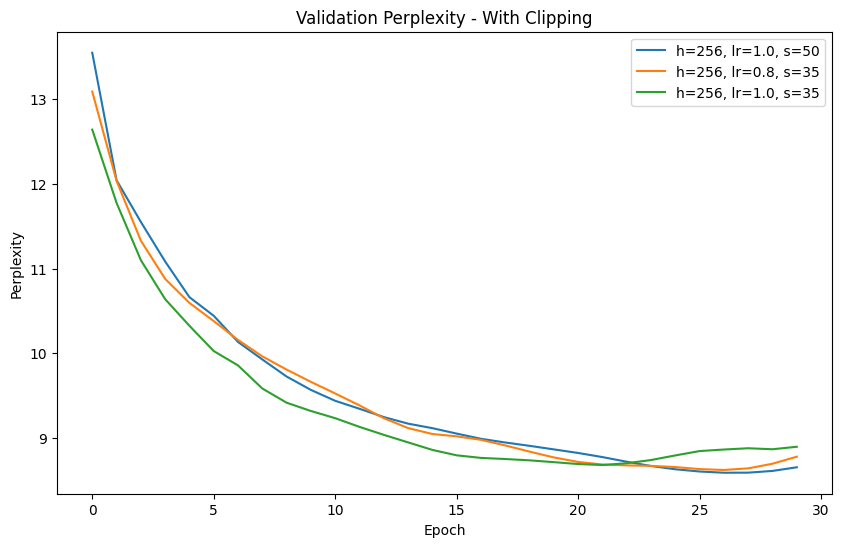
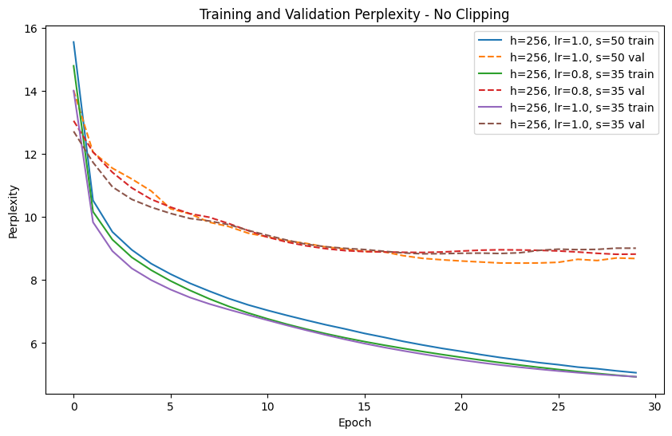
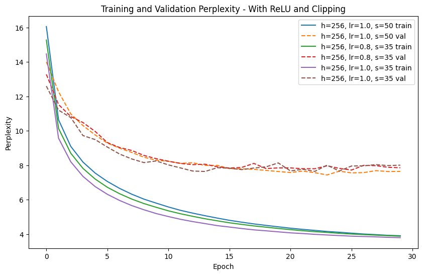
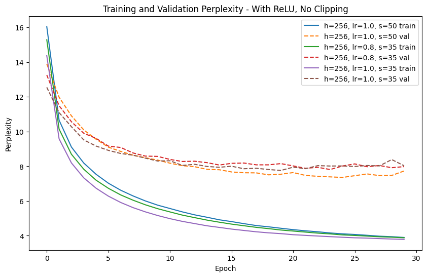

Report Overview
This report compares a scratch implementation of a Basic RNN and a GRU on The Time Machine character-level language modeling task. Results are discussed using validation perplexity, training stability, runtime, and qualitative sample output sequences.
- Primary metric: Validation perplexity.
- Dataset: The Time Machine.
- Environment: Python 3.10 + PyTorch
Experimental Setup
| Item | Value |
|---|---|
| Tokenization | Character-level |
| Train/Validation Split | 90/10 split |
| Loss | Cross-entropy |
| Optimizer | SGD |
| Batch Size | 32 |
Part 1: Basic RNN
Task 1: Hyperparameter Tuning
Goal: achieve the lowest possible validation perplexity by tuning epochs, hidden units, time steps, and learning rate.
Top 3 Configurations
| Config | Epochs | Hidden Units | Time Steps | Learning Rate | Best Train PPL | Best Val PPL | Notes |
|---|---|---|---|---|---|---|---|
| A | 30 | 256 | 50 | 1.0 | 5.038 | 8.5359 | Best overall in Round 2; best epoch 26. |
| B | 30 | 256 | 35 | 0.8 | 4.965 | 8.6568 | Stable convergence; near-best validation curve. |
| C | 30 | 256 | 35 | 1.0 | 4.925 | 8.7461 | Good early minima (best epoch 21), mild late overfitting. |
Perplexity Curves



Discussion
For the basic RNN, a two-round tuning strategy was used: an initial broad sweep followed by a targeted search near the strongest region. The best validation perplexity improved from 8.7604 in the broad round to 8.5359 after targeted tuning. The strongest runs consistently favored hidden units of 256 and relatively large learning rates (0.8 to 1.0).
Increasing epochs from 20 to 30 improved the best-achieved validation perplexity, but several runs reached their minimum before the final epoch,
indicating mild late overfitting. In this setting, steps=50 gave the single best run when paired with hidden=256 and lr=1.0.
Task 2: Gradient Clipping and Activation Function Study
Experiment A: No Gradient Clipping
[Describe setup and compare training stability.]

Experiment B: Replace Activation with ReLU (With Clipping)
[Describe setup and compare to baseline.]

Experiment C: Replace Activation with ReLU (No Clipping)
[Describe setup and compare to baseline.]

Do We Need Clipping with ReLU?
[Discuss whether ReLU alone is sufficient or clipping+ReLU works better.]
Part 2: GRU
Task 1: Hyperparameter Tuning and Analysis
Tune hyperparameters and then analyze runtime, perplexity, and output sequence quality.
Top 3 Configurations
| Config | Epochs | Hidden Units | Time Steps | Learning Rate | Runtime | Best Train PPL | Best Val PPL | Sample Output Quality |
|---|---|---|---|---|---|---|---|---|
| A | 30 | 256 | 30 | 1.0 | 30 | ~4.3 | 7.8106 | Best overall GRU run; strongest coherence among tested models. |
| B | 30 | 256 | 30 | 1.2 | 30 | ~4.0 | 7.8190 | Very close to best; slightly more aggressive LR but stable. |
| C | 30 | 320 | 30 | 1.0 | 30 | ~4.4 | 7.8562 | Larger hidden state helps, but not better than 256 in this search. |
Perplexity Curves
Discussion
GRU tuning also used a broad-plus-targeted strategy. Round 1 baseline best was 8.0660, and targeted Round 2 reduced this to 7.8106, outperforming the basic RNN best in this project. The best region was around hidden sizes 256 to 320 with learning rates 1.0 to 1.2 and 30 epochs.
In terms of trade-offs, increasing hidden size beyond 256 did not produce a large gain in validation perplexity, so 256 is the best efficiency/quality point among tested settings. Runtime-per-epoch was not separately logged in the sweep table, but larger hidden sizes are expected to cost more compute.
Task 2: Ablation Study on GRU Gates
Variant A: Reset Gate Only (No Update Gate)
[Describe implementation choice and behavior.]
Variant B: Update Gate Only (No Reset Gate)
[Describe implementation choice and behavior.]
Control: Full GRU
Discussion
[Compare both ablations against full GRU and explain why performance changes.]
Final Takeaways
- Targeted second-round tuning consistently improved results over the initial broad sweep for both RNN and GRU.
- Best basic RNN configuration reached validation perplexity 8.5359; best GRU reached 7.8106 (lower is better).
- Across both models, moderate-to-high learning rates (around 1.0), hidden size near 256, and longer training (30 epochs) were the most effective tested settings.